At present, the distributed notary Demo has been designed. In order to let user better feel the cross-chain use process and security assurance of the assets, we have created a page service demo. The following briefly describes the instructions and related security mechanisms.
Demo link address：http://transport01.smartmesh.cn:8080/static/
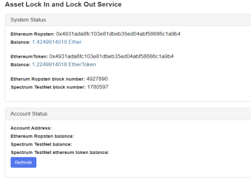
EthereumRopsten 0x4931ada8fc103e81dbeb35ed04abf58686c1a9b4: Ethereum testnet contract address
Balance 1.4249914018 Ether : The number of tokens locked in the contract, currently 1.4924914018 Ether
EthereumToken 0x4931ada8fc103e81dbeb35ed04abf58686c1a9b4: The Spectrum testnet contract address is the same as the Ethereum test chain contract address because it is deployed using the same address
Balance 1.2249914018 EtherToken : The number of tokens in the Spectrum testnet contract, currently 1.2924914018 EtherToken, will automatically update the corresponding number of Ethtokens when the user sends the corresponding number of Ethers to the Spectrum.
Etherum Ropsten block number: 4927890 The current number of blocks in the Ethereum testnet
Spectrum TestNet block number: 1780597 The current block number of the current Spectrum testnet
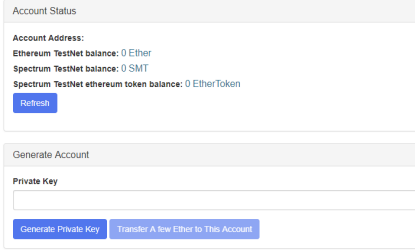
To transfer tokens from Ethereum testnet to Spectrum testnet, users need to have a personal account on Ethereum testnet. This demo assumes that the user has not created an account on Ethereum testnet (in actual use, if an account is existed which can be used directly), the account can be generated by creating a private key.
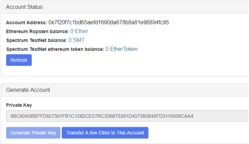
The new account address is: 0x7f20f7c1bd65aefd1690da678b8a81e96894fc95. Currently there is no balance on the Ethereum testnet and the Spectrum testnet (we use the same private key in the Ethereum testnet and the Spectrum testnet. Therefore, the account addresses are the same,but on different chains. ).
For a better demonstration, we sent some ETH test tokens to the account for the use of asset transfer demo.
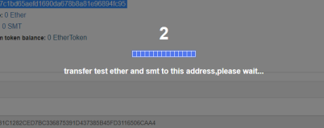
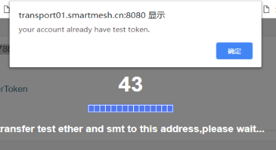
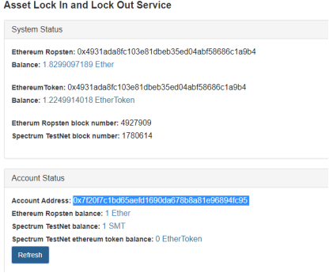
After the transfer is completed, the 1ETH test token and the 1SMT test token will be pre-stored in the new account. Currently, the ETHtoken on the Spectrum testnet is 0.
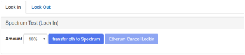
We transferred 10% of 1 ETH to the Spectrum testnet. Due to the HTLC mechanism, if the transfer is unsuccessful, Cancel Lockin can be used to cancel the asset transfer operation after the transaction expires.
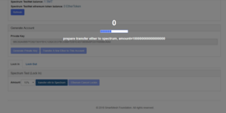
Send a lock-in request
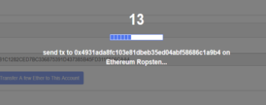
Send the transaction to the main chain and the token is locked successfully.
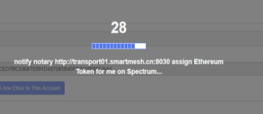
Corresponding ETHtoken is assigned on the side chain.
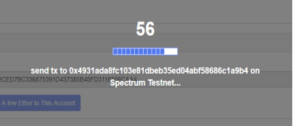
Lockin translation is generated on the side chain.
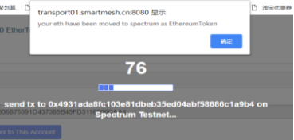
ETH lock and ETHtoken generation
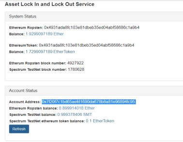
The current user gets 0.1 ETHToken on the Spectrum testnet and 0.899914018ETH on the Ethereum testnet (the transaction cost is part of the gas fee, otherwise it should be 0.9ETH).
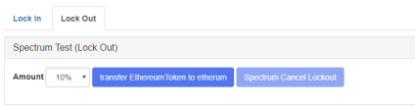
We transferred 10% of the 0.1ETHToken on the Spectrum testnet back to Ethereum testnet. Due to the HTLC mechanism, if the transfer is unsuccessful, Cancel Lockout can be used to cancel the asset return (Ethereum testnet) operation after the transaction expires.
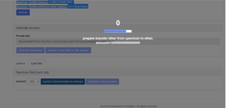
Send a lock-out request
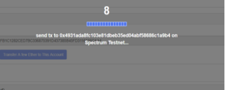
Send the transaction to the side chain ( the following partial description is ignored )
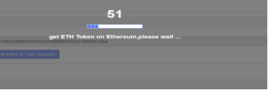
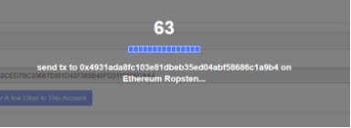
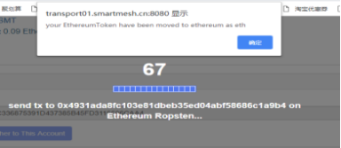
The ETH is restored and the ETHtoken is destroyed.
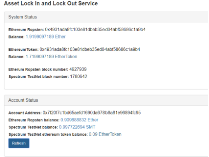
The current user still has 0.09 ETHToken (gas cost is SMT) on the Spectrum testnet. The remaining 0.899914018ETH (original balance) +0.01ETH≈0.90988832ETH on the Ethereum testnet (the transaction cost part of the gas fee, otherwise it should be 0.909914918ETH ).
At the same time, the corresponding balances in the Ethereum testnet and Spectrum testnet contracts are updated accordingly.
The security mechanism of the distributed notary demo is mainly composed of distributed key, HTLC atomic interchange, threshold signature and zero-knowledge proof.
In the distributed notary demo design, both the main chain contract and the side chain contract are generated by the notaries. To transfer the tokens to theside chain(Spectrum), the user needs to lock the tokens in the main chain (Ethereum) contract. If a notary has full control over the private key of the account, there is a considerable security risk. We adopted and designed the corresponding distributed key technology, in which multiple notaries jointly master the private key of the contract account, and each notary only generates and stores a part of the private key (ie, the private key shard ), The transfer and assembly of the private key shard does not occurs between each other. No one has a complete private key. The unlocking and transfer of account assets needs to be confirmed by most (threshold) notaries, which effectively reduces the risk of private key disclosure and multiple notaries (less than threshold) joint evil.
In the distributed notary demo design, if the user sends the tokens to the main chain contract to lock, but the notary does not take the corresponding mapping token generation operation, or when the user wants to unlock the side chain token back to the main chain account, the notary does not act will cause losses to users. We adopt and design the HTLC atomic interchange operation, and construct the atomic operation by linking the main chain lock token and the side chain generation map token. The secret and the time guarantee that the cross-chain transaction is either successful or fails, and will not cause the user loss.
In the process of returning the assets back to the main chain, if all the notaries are required to sign the confirmation, and if a notary is not online or does not act, the transaction will fail and the assets will not return to the main chain. We adopt and design the threshold signature technology. In the signature group consisting of m notaries, as long as the number of notaries greater than the threshold t (t ≤ m) confirms the signature, the confirmation of the transaction can be completed, effectively improving the success rate of the transaction. And at the same time, prevent the not- acting attack of individual notary.
Zero-knowledge proof can prove that you are the legal owner of a certain information and prove your identity without revealing personal information. In the process of distributed key and threshold signature, it is necessary to verify the correctness of the homomorphic public key, the correct ownership of the private key shard, the correct possession of the signature shard, and the identity of the notary. In order to strengthen the interaction security in the process and prevent the malicious notary from copying or destroying the transaction, we use the zero-knowledge proofs such as Dlog proof, Correct key proof and Homomorphic EIGamal proof to realize the hidden and verification of the non-interactive of secret information in multiple steps of lockin and lockout. If any link does not passed, the transaction will automatically fail, effectively ensuring the security of the transaction.
In addition, in the demo specific design, we also use elliptic curve encryption, VSS multi-party joint secret sharing, shared dialogue, Paillier homomorphic encryption, trapdoor commitment and other encryption technologies. In the later selection of notaries, we will also use the notary public group constraints, punishment mechanisms, exit mechanisms, and competition mechanisms to improve the security of the entire cross-chain system.